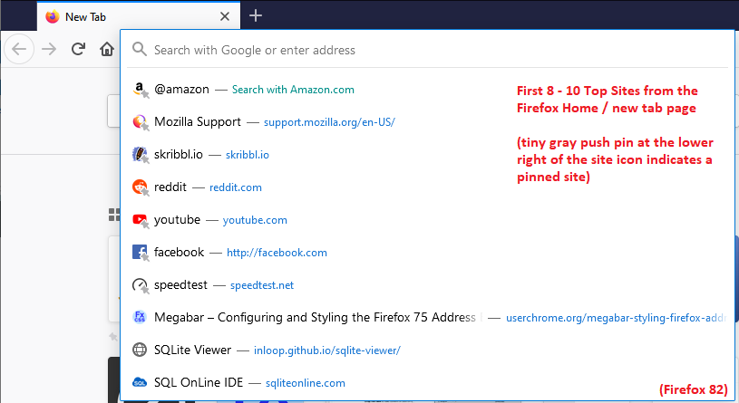

The "focused" address bar in Firefox 75+ has been controversial in the days since it debuted. Some users do not recognize or want to see the list of sites that drops down automatically when you click in the bar, while others object to the way it bulges and casts a shadow over the Bookmarks Toolbar. This page provides information and tools for managing the behavior and appearance of the bar and its drop-down.
- Turn off the automatically dropping Top Sites list
- The Show History button is gone!
- Change the types of suggested matches Firefox shows as you type
- Reduce automatic address bar enlargement (Firefox 78+)
- Re-styling the bar to reduce the bulging, URL on its own row, other modifications (userChrome.css rules)
- Firefox 75-76 roll back option
Top Sites versus Frequently Visited URLs

The Firefox Home page (internal address about:home) and New Tab page (internal address about:newtab) share a Top Sites section containing a combination of pre-pinned search shortcuts, popular sites, and URLs from your history. In Firefox 75+, the first eight Top Sites appears on the drop-down (in recent versions, this may be up to 10 if you show more than one row of Top Sites on your new tab page). If you have been ignoring this section, it's probably confusing to see this list. For information on how to add, remove, and rearrange those sites, see the Mozilla Support article: Customize the New Tab page.
If you don't find this useful, here are some options:
(1) Don't open the drop-down at all when first clicking in the address bar:
There is a checkbox for this in the "Address Bar" section of the Privacy & Security panel on the Options/Preferences page (in Firefox 78+). Alternately, you can make the change using about:config:
- In a new tab, type or paste about:config in the address bar and press Enter/Return. Click the button accepting the risk.
- In the search box in the page, type or paste URLB and pause while the list is filtered.
- (Firefox 78+) Double-click the browser.urlbar.suggest.topsites preference to switch the value from true to false.
- (Firefox 75-77 only) Double-click the browser.urlbar.openViewOnFocus preference to switch the value from true to false.
With that change, you can type a space in the address bar to display the classic "Show History" list.
(2) (Firefox 75-77 only) Switch back to showing frequently visited URLs from history when clicking in the address bar:
You can switch the automatic dropping list by disabling the Top Sites section on the Firefox Home / new tab page, as described in the Mozilla Support article Hide or display content in New Tab. On the Options/Preferences page, Home panel, uncheck the box for Top Sites:
Alternately, you can toggle a preference using about:config:
- In a new tab, type or paste about:config in the address bar and press Enter/Return. Click the button accepting the risk.
- In the search box in the page, type or paste topsi and pause while the list is filtered.
- Double-click the browser.newtabpage.activity-stream.feeds.topsites preference to switch the value from true to false.
But this has no effect in Firefox 78.
Where is my "Show History" arrow/triangle button?
You can access the classic frequent sites list by typing a space in the address bar. Firefox 83 adds a new button to the bottom of the Top Sites drop-down to call up the list without any typing (this assumes you did not turn off the display of Top Sites when clicking in the address bar.

If you turned off the display of Top Sites when clicking in the address bar, or want to consider another purely mouse-based method to access your frequently visited URLs list, I created an extension called Show History Frequent Sites Button. Its list looks like the following. You can configure the number of items and how the URLs open (for example, in a new tab, in a background tab, etc.), but it has some limitations noted in the description on the Mozilla Add-ons site.
Managing Standard Address Bar / Drop-down Features
You can disable many of the features of the drop-down to see the matches you find most useful. Many of these changes can be made on the Options/Preferences page, while some require a visit to the Advanced Configuration Editor (about:config).
Four Types of Suggestions
Search Engine Suggestions are retrieved dynamically from your current default search engine site. You can move these before or after other kinds of suggestions, or disable them completely using checkboxes on the search panel of the Options/Preferences page. For more information, see the Mozilla Support article: Search suggestions in Firefox.
Bookmark Suggestions show matches among your bookmarked sites, Open Tab Suggestions show matches to currently open pages, and History Suggestions show matches among sites you have visited. Want to hide some of those? To learn how to turn various of those categories on and off, see the Mozilla Support article: Address bar autocomplete in Firefox - Search your bookmarks, history and tabs.
In-URL-bar Autofill and One-Click Search Buttons
These features can be disabled as follows:
- In a new tab, type or paste about:config in the address bar and press Enter/Return. Click the button accepting the risk.
- In the search box in the page, type or paste URLB and pause while the list is filtered.
- To stop showing autofill suggestions in the address bar: Double-click the browser.urlbar.autoFill preference to switch the value from true to false. (To re-enable this feature, double-click again, or use the reset arrow icon at the far right of the row.)
- (Firefox 75-77 only) To stop showing the one-off search buttons at the bottom of the drop-down: Double-click the browser.urlbar.oneOffSearches preference to switch the value from true to false. (To re-enable this feature, double-click again, or use the reset arrow icon at the far right of the row.)
What about the informational "blue bar"?
The top row always provides information about what Firefox will do if you press the Enter/Return key, or click the Go arrow, right now. When there is an autofill match, the bar shows what URL will be loaded. If there isn't an autofill match but instead one or more search terms, Firefox will inform you what search engine it will use. If you are using a search engine keyword or bookmark keyword, the top row should indicate where that leads. Here's what those look like:
It's handy, but some people prefer not to see it. There is no checkbox or preference to hide the top row, but you can do it with a custom style rule in a userChrome.css file. More on that below.
How to Tame the Enlarging Address Bar (Firefox 78+)
Having the address bar enlarge immediately upon the cursor entering has been unpopular, and advocates for people affected by animations asked that an option be added to honor their system settings for preferring reduced motion. This option arrived in Firefox 78. When the cursor enters the bar automatically, for example, on a new tab, with this setting in place, there will not be any enlargement animation or auto-opening of the drop-down. You can interact with the page and other toolbar controls without distraction. As soon as you start interacting with the address bar, which opens the drop-down, then it will expand at that point. If you don't want any enlargement ever, please see the following section on userChrome.css rules.
If you do not want to change this preference at the system level, you can trigger this feature by creating a preference in Firefox. Note that this affects various other types of animation meant to communicate updated states, such as the blue swipe across a tab that just finished loading. If you're worried you'll miss something, this might not be the best option for you. But if you want to try it, here's how:
- In a new tab, type or paste about:config in the address bar and press Enter/Return. Click the button accepting the risk.
- In the search box in the page, type or paste ui.prefersReducedMotion and pause while the list is filtered.
If this preference was already created and shows a value of 0, skip to step D. - On the bar with the preference name, click the radio button next to Number and click the + button to add the preference. Then Firefox should display the new value.
- Set the value to 1 (double-click to edit if necessary) and click the blue checkmark button to save the change.
For the visually oriented, here is a sequence of screenshots of the above:
If you decide to undo this change, go back to about:config, find this preference, and use the little trash can icon at the right end of the row to delete it.
Megabar Styler – Rules for userChrome.css
You can use these controls to generate a rules file to restyle the Firefox 75 URL bar and drop-down. The rules can be incorporated directly into a userChrome.css file, or you could include them by reference as described in Adding Style Recipes to userChrome.css. The buttons to grab the CSS you tweak using the following form controls follow after the form.
As a shortcut to get rules simply to prevent the bar from expanding when you click in it, you can download the following file: userChrome-ZeroEnlargement.css. If you do not have a userChrome.css file yet, you can shorten that name by removing -ZeroEnlargement from the middle of it, and place that in your chrome folder (the one you create using the steps in How to Create a userChrome.css File). If you already have a userChrome.css file, you can copy paste rules from the download into yours.
Amount of URL bar enlargement: |
|||
Show the Visit / Search top row? Use a two-row layout? Show a thin line between suggestions ? Show a scroll bar when there are more than X rows on the drop-down: One-off Search Button row: |
|||
Title font size: |
URL font size: |
Modify bolding of text matches ? |
|
CSS based on above options:
CSS to be shown here, assuming JavaScript is not disabled.
Temporary Preference to Disable Enlargement Feature
If you're not ready for all that, Firefox 75 and 76 include a preference to disable the new "enlarging" design and revert to the Firefox 74 design. You can use it temporarily and return to this page for additional styling-related suggestions in the future.
- In a new tab, type or paste about:config in the address bar and press Enter/Return. Click the button accepting the risk.
- In the search box in the page, type or paste URLB and pause while the list is filtered.
- Double-click the browser.urlbar.update1 preference to switch the value from true to false.
This change doesn't take effect in currently open windows, but you will see the old bar in new windows or after exiting/quitting out of Firefox and starting it up again.